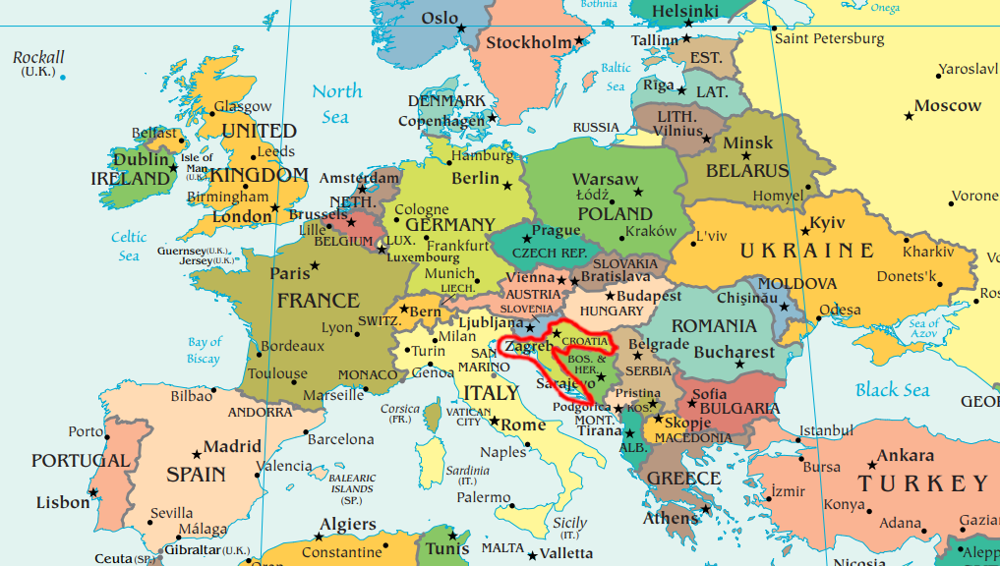
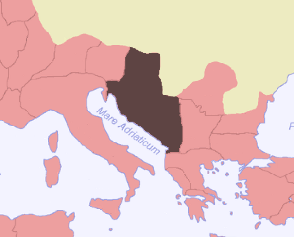
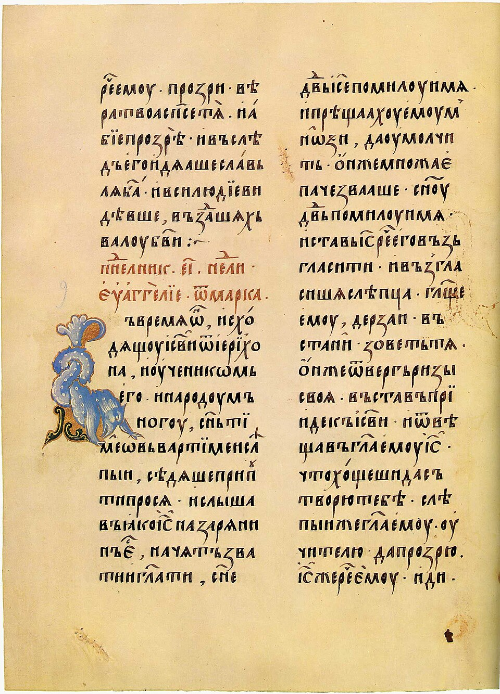
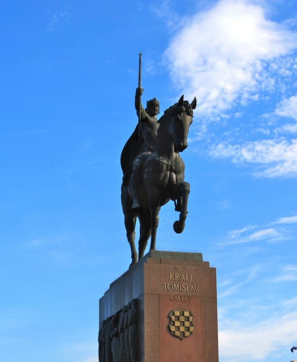
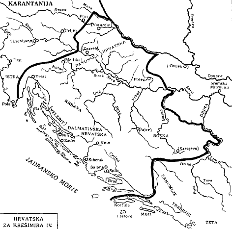
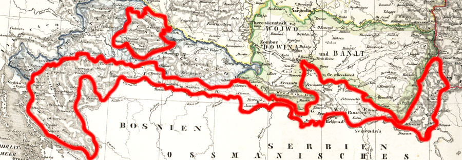
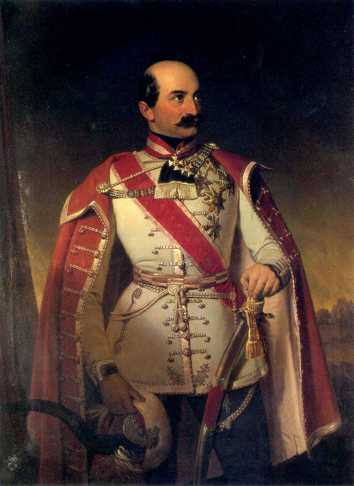
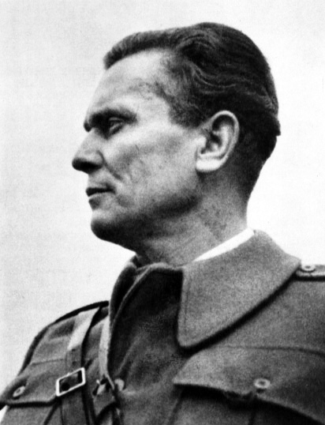
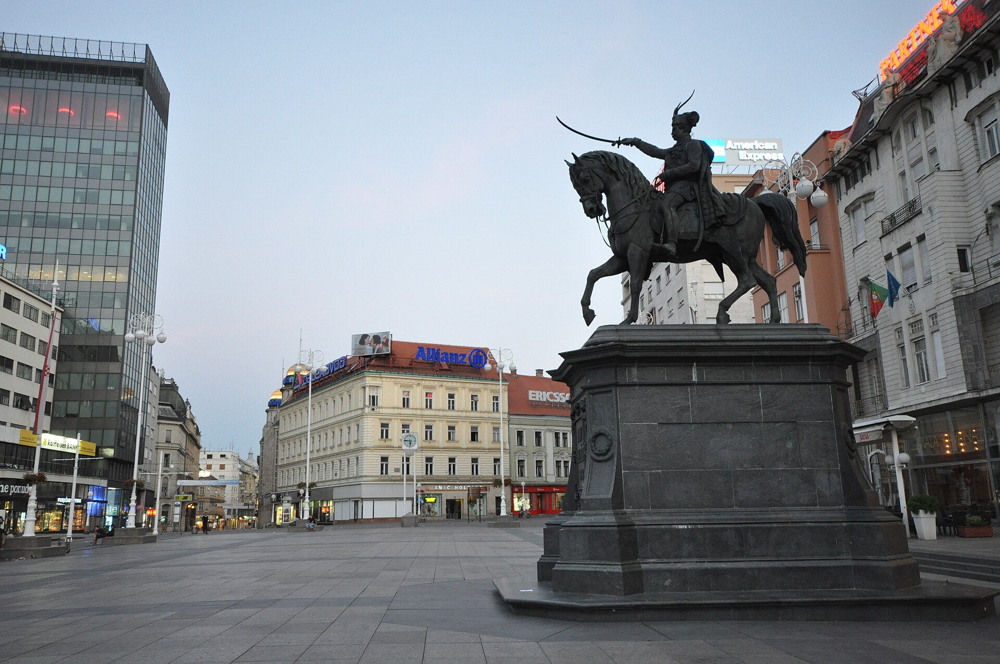

Croatian History

Croatia is a country in Southeastern Europe that enjoys a long stretch of coastline on the Adriatic Sea. Known today as a tourist destination, this country has a long, difficult history deeply entwined with that of its neighbors. It is a fascinating narrative that showcases the best and worst that humanity has to offer.

My hope is that you will leave this website not only better informed, but with a deeper appreciation for the history of the world's smaller nations, because even a seemingly insignificant history can be the reason why someone exists.
Chapter 1
Origins
Before it was the land of the Croats, Croatia was a part of the Roman Empire. Modern-day Croatia roughly corresponds with the Roman provinces of Illyricum and Pannonia, with the former being the home of the native Illyrian people. Roman sources tell us that the Illyrians were a distinct cultural group who spoke their own language, though now it is mostly forgotten.
The Slavic Migrations
As the Roman Empire waned, Europe was changing rapidly. Droves of people were migrating southward and westward, including the peoples that would later be known as the Slavs.
The early Slavs were decentralized, and it is unclear if they even considered themselves to be related. However, they did seem to have a common culture and a common language, as the ensuing Slavic linguistic family shows.
The Emergence of the Croats
We do not know exactly when a unique Croat identity was developed, but it seemed to occur after the Slavs had been Christianized. This is not surprising, because Christianity would play a large role in the history of the Croats.
Byzantine missionaries Cyril and Methodius developed the Glagolitic script for translating the Bible into the early Slavic language(s). While most other Slavic peoples would forgo the Glagolitic script in favor of the later Cyrillic script (named after Cyril) and the Croats themselves would eventually write their language in the Latin script, there was a time in which Glagolitic was very popular in Croatia, even spawning some regional variants.
It is important to understand that the Croat identity was not simply the splintering of some early Slavic tribe. While earlier scholars took the view that the Slavs "invaded" the former Roman lands and fully replaced their inhabitants, modern scholarship suggests that the post-Roman Slavic identities emerged as a result of cultural dialogue between Slavic migrants and natives. While they would come to speak a Slavic language, it does not seem fair to trace the Croat's heritage to the Slavs alone.


Chapter 2
The Kingdom of Croatia
Croatia was an important regional power during the Medieval Ages. Neighboring the stable Eastern Roman Empire (also called the Byzantine Empire) and the rising Bulgarian Empire, it witnessed and withstood some of the most important challenges the era had to offer.
From Duchy to Kingdom
Before they were kings, the early rulers of Croatia were called dux Croatorum/dux Chroatorum, Latin for “duke of the Croats.” The earliest undisputed use of the title comes from the 9th-century, within Duke Branimir’s inscription on a church in Šopot. Branimir is our first recorded political leader of the Croats, and his inscription is the earliest written mention of the Croats as a people.
Tomislav was the first Croatian ruler to receive the title rex Croatorum, Latin for “king of the Croats.” The emergence of this title in 925 coincides with the peak of the medieval Croatian state. All future native Croatian kings would use this title, and all future Hungarian ones adopted it in addition to their other titles.
Bulgaria
Once semi-nomadic pagans, the Bulgars were rapidly Christianizing, Slavicizing, and growing in power. Simeon I of Bulgaria, once a mere student of religion, soon found himself in the throne, and put his education to good use. In school, he was taught that there was one God, who endowed one emperor with one holy empire. While most believed that emperor to be the Eastern Roman emperor, Simeon believed it to be himself, and nothing would get between him and his God-given right.
Simeon trounced the Eastern Romans with ease, spreading fire all the way to the gates of Constantinople, but failed to conquer Tomislav's young Kingdom of Croatia. As the most powerful empire in Europe nearly buckled, Croatia stood firm.
The Great Schism
In 1054, growing tensions between the eastern and western sides of Christendom boiled over, and the Church officially split in two. In the west, there was the Catholic Church, led by the Pope in Rome, and in the west there was what would later be called the Eastern Orthodox Church, led by the Patriarch of Constantinople.
Straddling the line between these two spheres of influence, Croatia was left to choose which church to pledge its allegiance to. In a decision that would have a profound impact on the region's future, King Peter Krešimir IV chose to side with Rome, making Croatia one of the world's first Catholic states. To show his loyalty, Krešimir enforced the exclusive use of Latin during services and forbade customs that were associated with the Orthodox Church. Though unpopular in their time, his decisions would have lasting consequences, resulting in Croatia's use of the Latin alphabet to this day.


Chapter 3
Hungary and the Hapsburgs
The Normans, notable for conquering England and permanently Francizing English, left their mark on Croatia by capturing King Peter Krešimir IV. His successor would then marry the sister of the Hungarian king, which resulted in Hungary having a claim to the Croatian throne.
One succession crisis later, and from 1102 onwards Croatia was under the Hungarian crown... in a sense. Croatia and Hungary were joined in what is called a personal union, when two states are ruled by the same person but remain separate politically. While this might seem like the end of Croatian sovereignty (and it was the end of their native royal dynasties), the Kingdom retained a great deal of internal autonomy.
The Good
Croatian nobles retained their lands and titles, and Croatian political institutions were preserved. The office of the ban (something akin to a provinicial governor) was transformed into the Kingdom's viceroy, who acted as ruler while the Hungarian-born king ruled their native land.
Additionally, Croat nobles could participate in the Sabor, which would be fondly remembered in later periods where it lost its power.
The Bad
The personal union afforded Croatia a great deal of stability, but it did not protect it from its neighbors. First, the Venetians mercilessly sacked the Dalmatian city of Zara in 1202 as part of the Fourth Crusade, causing the Pope at the time to excommunicate them all. Then came the Mongols in the 1240s.
Worst of all was a new threat emerging in Anatolia: the Ottoman Empire. Rising from steppe nomads to conquerors of Constantinople, the Ottomans terrified European Christians. As Hungary would come to be ruled by the Hapsburg family (who also ruled Austria), Croatia was gradually reduced to a buffer state between the Hapsburgs and the Ottomans.
Nationalism and 1848
For centuries, Croatia languished. Bit by bit, its autonomy and territory was whittled away. Even as the Ottomans stopped posing a threat, Croatia was neglected by its rulers. The Croats grew desperate for a chance to return to their former power and prestige, fueled by growing nationalism.
It was through nationalism that they would get their chance. Among the many revolutions of 1848 was the Hungarian Revolution, wherein Hungary rebelled against Austria. A servant of the Austrian crown, Croatia was called to act, and so general Josip Jelačić took the opportunity to lead troops against Hungary, while also attempting to restore Croatian political institutions like the Sabor and the position of the Ban. Hoping that this show of loyalty would be rewarded with greater autonomy, the Croats were disappointed to see the revolution end with Hungary receiving favorable terms and themselves receiving nothing.
The Croats' nationalism began to fester, and the urge to separate from Austria, now Austria-Hungary, burned.


Chapter 4
Yugoslavia
The Austro-Hungarian dual monarchy, which once seemed like a useful compromise, was quickly revealing its instability. The multiethnic state was struggling to maintain unity in a hyper-nationalist, ethnic-conscious Europe. In fact, it would be disgruntled Austro-Hungarian subjects that kickstarted World War I in 1914 with the assassination of Archduke Franz Ferdinand.
As the war raged on, Croats and neighboring Slavic peoples understood that Austria-Hungary would not surive. So, they made plans for a new state, one built on Pan-Slavist sentiment that had been bubbling for decades.
The Kingdom of Yugoslavia
Yugoslavia, meaning "land of the South Slavs," was comprised of modern-day Slovenia, Croatia, Serbia, Bosnia and Hercegovina, Montenegro, Kosovo, and North Macedonia. The state was an unequitable pragmatic arrangement where the disaffected peoples of former empires banded together to enjoy greater autonomy than they had previously.
Burdened by a stagnant, overly rural economy and a government that promoted Serbian hegemony, the Kingdom of Yugoslavia did little to satiate its constituents' desires for independence. Nationalist sentiment still burned strongly, and the culturally similar peoples felt divided by their different religions.
World War II
If World War I was a product of nationalism, World War II was a product of political and economic ideologies. The Kingdom of Yugoslavia was not spared in this ideological warfare, and Croatia would fall to Nazi Germany, spawning a fascist puppet state that directed the century-long grievances and resentment of the Croats towards inhuman atrocities.
Serbs and Bosniaks (Bosnian Muslims) were slaughtered indiscriminatantly. While Nazi Germany conducted its genocides with a structured efficiency, the Croatian Ustaše were much less coordinated and far more brutal, sometimes pushing people off of cliffs. Once reports of the killings in Croatia reached the SS, they urged the Ustaše to tone it down because it was making the fascist movement look bad.
Communist Yugoslavia
Thankfully, the reign of terror of the Ustaše and the Chetniks (a similarly brutal Serbian nationalist group) would eventually come to an end, as the grassroots communist Partisans won the battle for Yugoslavia. After brutally suppressing the fascist movement, leading them on forced marches to be executed in the very concentration camps they once operated, the Partisans began to rebuild Yugoslavia, with their leader, Josip Broz Tito, as the architect.
Keenly aware of its predecssors' falts, communist Yugoslavia actively downplayed the identities and religions of its ethnicities, as well as the atrocities they led to. Under Tito, they successfully if imperfectly united the country towards socialist ideals of industrialization and self-sufficiency, though they failed to attain them.
A founding member of the Non-Aligned Movement, communist Yugoslavia avoided the pressures of the Cold War and focused on internal development. Unfortunately, poorly thought-out economic policies exacerbated pereceived inequalities between the nation's constituent republics, which drew attention to the ethnic divides that Tito had tried so hard to minimize.
The Yugoslav Wars
Communist Yugoslavia ended in the 90s with an explosion of interethnic violence that tragically mirrored the region's experiences during World War II. It was in these brutal conflicts that the term "ethnic cleansing" was coined. Once again, Croatia was guilty of attempted genocide.
After hundreds of years, Croatia was a truly independent state once again. Emerging from the bloody 20th century, Croatia reveled in the nationalism that it had been deprived for so long, and quietly became a tourist hotspot. A statue of Jelačić was reinstated in Zagreb after being hidden by the communist administration. As the spectre of communist whitewashing still lingers over all the former Yugoslav countries, Ustaše apologetics and iconography have became distressingly common in modern Croatia. Whether the country will slide back into fascism or correct its course remains to be seen.

